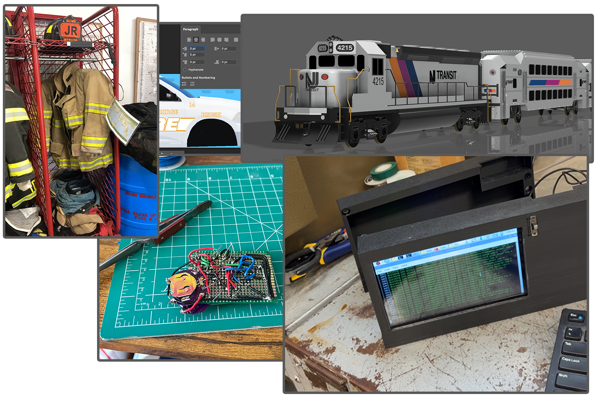

About Me
I am a self taught engineer and programmer with an interest in building things that combine software, hardware, and 3D design. Over the past few years, I've spent a lot of time experimenting with different creative tools. I have taught myself programming languages like C++, HTML/JavaScript/CSS, and Fortran, as well as CAD software like Autodesk Fusion 360 and AutoCAD .
Many of my early projects started as things I made when I was bored, but I evolved to really love them, so I continued them until they turned into something great. My best ideas came from a quick doodle, thoughtless sketch in CAD, or a random thought that never stopped growing and having more elements added onto them.
Throughout these projects, I have developed many skills like problem solving, digital and physical design in all forms, and learning new tools independently. Over time, my interests expanded and I combined all of them into bigger projects, with 3D printed components, interactive software, and custom hardware.

Skills
Programming
- C++ (Robotics)
- Java
- JavaScript
- HTML / CSS
- Fortran 95
3D Modeling
- Autodesk Fusion 360
- Mechanical modeling
- Designing parts for 3D printing
- Rendered final products
- Automotive design
Graphic Design
- Adobe Photoshop
- Vehicle livery design
- Poster and graphic layout design
Web Development
- HTML / CSS / JavaScript
- Interactive UI elements
- Browser based simulations